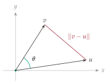
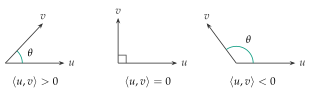
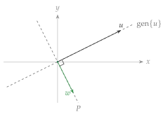
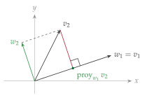
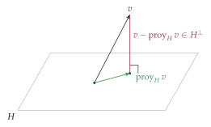

Parcial 2 · Espacios fundamentales, cambio de base y ortogonalidad
Para arrancarTu sombra al mediodía es la proyección ortogonal de tu cuerpo sobre el piso. Con el producto punto podemos calcular sombras en cualquier dimensión, y de ahí sale casi toda la estadística.
Hasta aquí los espacios vectoriales de este libro han tenido una estructura puramente algebraica: sumar vectores y multiplicarlos por escalares. Con eso pudimos hablar de combinaciones lineales, de independencia y de dimensión, pero no de nociones tan corrientes como la longitud de un vector, la distancia entre dos puntos, el ángulo entre dos direcciones o la perpendicularidad. Todas ellas nacen de una sola operación, el producto punto, que a cada pareja de vectores de Rn le asigna un número. En este capítulo la definimos, demostramos sus propiedades y de ella deducimos, con demostraciones completas, las desigualdades de Cauchy–Schwarz y triangular.
Con la perpendicularidad aparecen las bases más cómodas que existen: las ortonormales. Veremos que en una base así las coordenadas de un vector se obtienen con simples productos punto, sin resolver ningún sistema de ecuaciones. Después estudiaremos la proyección ortogonal de un vector sobre otro y sobre un subespacio, el proceso de Gram–Schmidt que convierte cualquier base en una ortogonal, el complemento ortogonalH⊥ de un subespacio y el teorema de que todo vector de Rn se descompone, de manera única, como suma de un vector de H y uno de H⊥.
Trabajamos con los conceptos de subespacio, base, dimensión y coordenadas de los capítulos anteriores; también usamos los espacios fundamentales de una matriz A (los espacios nulo, fila y columna, que escribimos NA, RA y CA). Los vectores de Rn se escriben como n-uplas o, cuando conviene, como columnas.
El producto punto (o producto escalar) de dos vectores u=(u1,…,un) y v=(v1,…,vn) de Rn es el número real ⟨u,v⟩=u⋅v=u1v1+u2v2+⋯+unvn=i=1∑nuivi.
Conviene insistir en lo obvio: el resultado de ⟨u,v⟩ es un escalar, no un vector. Usaremos indistintamente las dos notaciones ⟨u,v⟩ y u⋅v.
Observación · El producto punto como producto de matrices
Si escribimos u y v como columnas, entonces uT es una fila y el producto de matrices uTv es una matriz 1×1, es decir, un número: uTv=(u1u2⋯un)v1v2⋮vn=u1v1+⋯+unvn=⟨u,v⟩. De ahí que la componente i del producto Ax sea ⟨ri,x⟩, con ri el i-ésimo renglón de A. Esta lectura es la que usaremos al hablar de complementos ortogonales de espacios fundamentales.
Calcula ⟨u,v⟩ para (a) u=(1,2,0,−3), v=(3,−2,4,2) en R4; (b) u=(1,2,−1), v=(3,−2,4), escritos como columnas, en R3.
Soluciónintenta primero
(a) Multiplicamos componente a componente y sumamos: ⟨u,v⟩=(1)(3)+(2)(−2)+(0)(4)+(−3)(2)=3−4+0−6=−7. (b) Como producto de matrices, uTv=(12−1)3−24=(1)(3)+(2)(−2)+(−1)(4)=3−4−4=−5.
Las propiedades siguientes son las que se usan en cada cálculo con productos punto; por eso las demostramos con cuidado.
a) Como el producto de números reales es conmutativo, uivi=viui para cada i, y sumando, ⟨u,v⟩=∑uivi=∑viui=⟨v,u⟩.
b) Como v+w=(v1+w1,…,vn+wn), ⟨u,v+w⟩=i=1∑nui(vi+wi)=i=1∑n(uivi+uiwi)=i=1∑nuivi+i=1∑nuiwi=⟨u,v⟩+⟨u,w⟩, donde usamos la distributividad de los reales y luego separamos la suma. La segunda igualdad se sigue de la primera y de a): ⟨u+v,w⟩=⟨w,u+v⟩=⟨w,u⟩+⟨w,v⟩=⟨u,w⟩+⟨v,w⟩.
c)⟨cu,v⟩=∑(cui)vi=c∑uivi=c⟨u,v⟩, y análogamente ⟨u,cv⟩=∑ui(cvi)=c⟨u,v⟩.
d) y e) Tenemos ⟨v,v⟩=v12+⋯+vn2, una suma de cuadrados de reales, luego no es negativa. Si es cero, cada sumando vi2 (todos ≥0) debe ser cero, es decir, vi=0 para todo i y v=0. Recíprocamente, ⟨0,0⟩=0.
De b) y c) se sigue que el producto punto es lineal en cada argumento; en particular ⟨i∑aiui,j∑bjvj⟩=i,j∑aibj⟨ui,vj⟩, regla que se usa constantemente para desarrollar productos.
Sean u=(2,−2), v=(5,8) y w=(−4,3). Calcula (a) ⟨u,v⟩; (b) (u⋅v)w; (c) u⋅(2v); (d) ∥w∥2 (es decir, ⟨w,w⟩); (e) u⋅(v−2w).
Soluciónintenta primero
(a) ⟨u,v⟩=(2)(5)+(−2)(8)=10−16=−6.
(b) Es el escalar −6 multiplicando al vector w: (u⋅v)w=−6(−4,3)=(24,−18). Nota que el resultado es un vector.
(c) Por la propiedad de homogeneidad, u⋅(2v)=2(u⋅v)=2(−6)=−12. Directamente: 2v=(10,16) y (2)(10)+(−2)(16)=20−32=−12.
(d) ⟨w,w⟩=(−4)2+32=16+9=25.
(e) v−2w=(5,8)−(−8,6)=(13,2), de modo que u⋅(v−2w)=(2)(13)+(−2)(2)=26−4=22. Por distributividad se obtiene lo mismo: u⋅v−2u⋅w=−6−2((2)(−4)+(−2)(3))=−6−2(−14)=22.
6.2 Norma, vectores unitarios y distancia
En R2 y R3 la longitud de un vector v=(v1,v2) es, por el teorema de Pitágoras, v12+v22; en R3, v12+v22+v32. Usamos esa fórmula como definición en cualquier dimensión, y la escribimos con el producto punto.
La norma (longitud o magnitud) de v=(v1,…,vn)∈Rn es ∥v∥=⟨v,v⟩=v12+v22+⋯+vn2. Esto tiene sentido porque ⟨v,v⟩≥0 (teorema 6.3). Equivalentemente, ∥v∥2=⟨v,v⟩.
Si v∈Rn es distinto de cero, entonces u=∥v∥v es un vector unitario con la misma dirección y sentido de v. Se dice que u se obtiene normalizandov.
Demostraciónmostrar
Como v=0, ∥v∥>0 y podemos dividir. Es un múltiplo positivo de v, así que tiene su misma dirección y sentido. Por la propiedad b) del teorema anterior con c=1/∥v∥>0: ∥u∥=∥v∥1v=∥v∥1∥v∥=1.
Ejemplo 6.10· Vector unitario en una dirección dada
Encuentra el vector unitario en la dirección de v=(3,−1,2).
Soluciónintenta primero
∥v∥=9+1+4=14. Por lo tanto u=141(3,−1,2)=(143,−141,142). Comprobación: ∥u∥2=149+141+144=1.
La distancia entre dos puntos es la longitud del vector que va de uno al otro.
Encuentra la distancia entre u=(0,0,2) y v=(2,0,1).
Soluciónintenta primero
u−v=(0,0,2)−(2,0,1)=(−2,0,1), así que d(u,v)=∥u−v∥=(−2)2+02+12=5. El orden no importa: ∥v−u∥=∥(2,0,−1)∥=5 también, pues ∥−w∥=∣−1∣∥w∥=∥w∥ por el teorema 6.7.
6.3 Cauchy–Schwarz, ángulos y ortogonalidad
Para definir el ángulo entre dos vectores necesitamos que cierto cociente esté entre −1 y 1. Eso es exactamente lo que garantiza la siguiente desigualdad, una de las más importantes de toda la matemática.
Si u,v∈Rn, entonces ∣⟨u,v⟩∣≤∥u∥∥v∥. Además, la igualdad se da si y solo si uno de los dos vectores es múltiplo escalar del otro.
Demostraciónmostrar
Si v=0, ambos lados valen 0 y la igualdad es trivial (y v=0⋅u). Supongamos v=0. Para cada número real t, por las propiedades del producto punto, 0≤∥u−tv∥2=⟨u−tv,u−tv⟩=∥u∥2−2t⟨u,v⟩+t2∥v∥2. Esto vale para todo t; elegimos el valor t=∥v∥2⟨u,v⟩ (que existe porque ∥v∥>0). Entonces 0≤∥u∥2−2∥v∥2⟨u,v⟩2+∥v∥2⟨u,v⟩2=∥u∥2−∥v∥2⟨u,v⟩2. Multiplicando por ∥v∥2>0 resulta ⟨u,v⟩2≤∥u∥2∥v∥2, y sacando raíz cuadrada, ∣⟨u,v⟩∣≤∥u∥∥v∥.
Caso de igualdad. Si u=cv, entonces ∣⟨u,v⟩∣=∣c∣∥v∥2=∥cv∥∥v∥=∥u∥∥v∥. Recíprocamente, si v=0 y ∣⟨u,v⟩∣=∥u∥∥v∥, la cadena anterior es una igualdad para ese t, es decir ∥u−tv∥2=0; por el teorema 6.7, u−tv=0 y u=tv.
Desarrollamos el cuadrado y usamos Cauchy–Schwarz en la forma ⟨u,v⟩≤∣⟨u,v⟩∣≤∥u∥∥v∥: ∥u+v∥2=⟨u+v,u+v⟩=∥u∥2+2⟨u,v⟩+∥v∥2≤∥u∥2+2∥u∥∥v∥+∥v∥2=(∥u∥+∥v∥)2. Como ambos lados son no negativos, al extraer raíz cuadrada se conserva la desigualdad.
Geométricamente: en un triángulo de lados u, v y u+v, ningún lado es más largo que la suma de los otros dos. De aquí se obtienen las propiedades de la distancia que esperamos de ella.
a) y b): d(u,v)=∥v−u∥≥0 y vale 0 si y solo si v−u=0, por el teorema 6.7. c): ∥u−v∥=∥(−1)(v−u)∥=∣−1∣∥v−u∥. d): escribimos w−u=(w−v)+(v−u) y aplicamos la desigualdad triangular: ∥w−u∥≤∥w−v∥+∥v−u∥, que es d(u,w)≤d(v,w)+d(u,v).
El ángulo entre dos vectores
Sean u,v∈R2 no nulos, con ángulo θ entre ellos. El lado que une sus extremos tiene longitud ∥v−u∥, y la ley de cosenos dice que ∥v−u∥2=∥u∥2+∥v∥2−2∥u∥∥v∥cosθ. Por otra parte, desarrollando con el producto punto, ∥v−u∥2=∥u∥2−2⟨u,v⟩+∥v∥2. Comparando, ⟨u,v⟩=∥u∥∥v∥cosθ. Esta identidad, válida en el plano, se toma como definición del ángulo en cualquier dimensión.

El ángulo θ entre u y v; el tercer lado del triángulo mide ∥v−u∥ y la ley de cosenos da ⟨u,v⟩=∥u∥∥v∥cosθ.
El ánguloθ entre dos vectores no nulos u,v∈Rn es el único número θ∈[0,π] tal que cosθ=∥u∥∥v∥⟨u,v⟩.
La definición es correcta: por Cauchy–Schwarz, ⟨u,v⟩/(∥u∥∥v∥)≤1, así que el cociente pertenece a [−1,1], y como el coseno es una biyección de [0,π] sobre [−1,1] existe exactamente un ángulo con ese coseno. Como ∥u∥ y ∥v∥ son positivos, cosθ tiene siempre el signo de ⟨u,v⟩: el ángulo es agudo si ⟨u,v⟩>0, recto si ⟨u,v⟩=0 y obtuso si ⟨u,v⟩<0. Además θ=0 cuando u y v tienen la misma dirección y sentido, y θ=π cuando tienen sentidos opuestos (caso de igualdad en Cauchy–Schwarz).

El signo de ⟨u,v⟩ decide si el ángulo es agudo, recto u obtuso.
Calcula el ángulo entre (a) u=(−4,0,2,−2) y v=(2,0,−1,1); (b) u=(1,1,0) y v=(0,1,1).
Soluciónintenta primero
(a) ∥u∥2=16+0+4+4=24, de modo que ∥u∥=26; ∥v∥2=4+0+1+1=6, luego ∥v∥=6; y ⟨u,v⟩=−8+0−2−2=−12. Entonces cosθ=266−12=12−12=−1⟹θ=π=180∘. En efecto, u=−2v: apuntan en sentidos opuestos.
(b) ⟨u,v⟩=0+1+0=1 y ∥u∥=∥v∥=2, así cosθ=21 y θ=π/3=60∘.
Sean u,v∈Rn no nulos. Entonces u⊥v si y solo si el ángulo entre ellos es θ=π/2. Además, el vector cero es ortogonal a todo vector.
Demostraciónmostrar
Para vectores no nulos, cosθ=⟨u,v⟩/(∥u∥∥v∥) es cero exactamente cuando ⟨u,v⟩=0, y en [0,π] el único ángulo de coseno 0 es π/2. Por último, ⟨0,v⟩=∑0⋅vi=0.
Esta caracterización es la razón de que llamemos «perpendicularidad» a una condición puramente algebraica, válida en Rn para cualquier n.
Determina todos los vectores de R2 ortogonales a u=(4,2).
Soluciónintenta primero
Sea v=(v1,v2) con ⟨v,u⟩=0. Entonces 4v1+2v2=0, es decir v2=−2v1, y v=(v1,−2v1)=v1(1,−2). Así, el conjunto de vectores ortogonales a u es la recta por el origen P=gen{(1,−2)}. Comprobación: ⟨(4,2),(1,−2)⟩=4−4=0. La figura muestra ambas rectas; observa que en el dibujo son perpendiculares.

Para vectores ortogonales el teorema de Pitágoras se cumple en Rn, y de hecho caracteriza la ortogonalidad.
Sean u,v∈Rn. Entonces u⊥v si y solo si ∥u+v∥2=∥u∥2+∥v∥2.
Demostraciónmostrar
Por las propiedades del producto punto, ∥u+v∥2=⟨u+v,u+v⟩=∥u∥2+2⟨u,v⟩+∥v∥2. Esta expresión coincide con ∥u∥2+∥v∥2 si y solo si 2⟨u,v⟩=0, es decir, si y solo si ⟨u,v⟩=0.
Muestra que S={v1,v2,v3} es ortonormal, con v1=(21,21,0),v2=(−62,62,322),v3=(32,−32,31).
Soluciónintenta primero
Primero, las normas: ∥v1∥2∥v2∥2∥v3∥2=21+21+0=1,=362+362+98=364+3632=1,=94+94+91=1. Ahora, los productos entre pares distintos: ⟨v1,v2⟩⟨v1,v3⟩⟨v2,v3⟩=21(−62)+21(62)+0=−61+61=0,=21⋅32−21⋅32+0=0,=−62⋅32−62⋅32+322⋅31=−1822−1822+1842=0. Todos los vectores son unitarios y ortogonales entre sí: S es ortonormal.
(a) Verifica que {(1,1),(−21,21)} es una base ortogonal de R2 y conviértala en ortonormal. (b) ¿Es B={(21,21),(21,−21)} una base ortonormal?
Soluciónintenta primero
(a) Sean w1=(1,1) y w2=(−21,21). Entonces ⟨w1,w2⟩=−21+21=0, de modo que son ortogonales. Sus normas son ∥w1∥=2 y ∥w2∥=41+41=21=21. Normalizamos (teorema 6.9): u1=∥w1∥w1=(21,21),u2=∥w2∥w2=2(−21,21)=(−22,22). Así {u1,u2} es una base ortonormal de R2 (es una base por el teorema 6.26 que sigue).
(b) Los vectores son ortogonales: 41−41=0. Pero (21,21)=41+41=21=1; por tanto B es ortogonal pero no ortonormal.
Los conjuntos ortogonales tienen una propiedad notable: nunca son redundantes.
Si S={u1,…,uk} es un conjunto ortogonal de vectores no nulos de Rn, entonces S es linealmente independiente.
Demostraciónmostrar
Supongamos que c1u1+⋯+ckuk=0. Fijemos un índice j y hagamos el producto punto de ambos lados con uj: 0=⟨0,uj⟩=⟨i=1∑kciui,uj⟩=i=1∑kci⟨ui,uj⟩=cj⟨uj,uj⟩=cj∥uj∥2, porque ⟨ui,uj⟩=0 para i=j. Como uj=0, ∥uj∥2>0, luego cj=0. Al valer esto para cada j, la única combinación lineal nula es la trivial.
En Rn, todo conjunto ortogonal de n vectores no nulos es una base. En particular, todo conjunto ortonormal de n vectores es una base ortonormal.
Demostraciónmostrar
Por el teorema anterior el conjunto es linealmente independiente; y en Rn todo conjunto linealmente independiente de n vectores es una base (teorema de la dimensión).
Muestra que S={v1,v2,v3,v4} es una base de R4, con v1=(2,3,2,−2), v2=(1,0,0,1), v3=(−1,0,2,1), v4=(−1,2,−1,1).
Soluciónintenta primero
Basta verificar que el conjunto es ortogonal, pues son cuatro vectores no nulos en R4 (corolario 6.27). Calculamos los seis productos: ⟨v1,v2⟩⟨v1,v4⟩⟨v2,v4⟩=2+0+0−2=0,=−2+6−2−2=0,=−1+0+0+1=0,⟨v1,v3⟩⟨v2,v3⟩⟨v3,v4⟩=−2+0+4−2=0,=−1+0+0+1=0,=1+0−2+1=0. Todos se anulan. Por tanto S es una base ortogonal de R4 (sus normas al cuadrado son 21,2,6 y 7, luego no es ortonormal). Verificar la independencia lineal por eliminación gaussiana habría exigido reducir una matriz 4×4.
Coordenadas respecto de una base ortogonal
Aquí está el beneficio principal de las bases ortogonales. En general, hallar [w]B exige resolver un sistema c1v1+⋯+cnvn=w. Si B es ortogonal, los coeficientes se leen directamente.
Teorema 6.29· Coeficientes de Fourier respecto de una base ortogonal
Sea B={v1,…,vn} una base ortogonal de Rn. Entonces todo w∈Rn se escribe como w=∥v1∥2⟨w,v1⟩v1+∥v2∥2⟨w,v2⟩v2+⋯+∥vn∥2⟨w,vn⟩vn, es decir, [w]B=(∥v1∥2⟨w,v1⟩,…,∥vn∥2⟨w,vn⟩). Estos números se llaman coeficientes de Fourier de w respecto de B.
Demostraciónmostrar
Como B es una base, existen escalares únicos c1,…,cn con w=c1v1+⋯+cnvn. Hacemos el producto punto con vj y usamos la ortogonalidad: ⟨w,vj⟩=i=1∑nci⟨vi,vj⟩=cj⟨vj,vj⟩=cj∥vj∥2. Como vj=0, cj=⟨w,vj⟩/∥vj∥2.
Teorema 6.30· Coordenadas respecto de una base ortonormal
Si B={u1,…,un} es una base ortonormal de Rn, entonces para todo w∈Rnw=⟨w,u1⟩u1+⟨w,u2⟩u2+⋯+⟨w,un⟩un,[w]B=⟨w,u1⟩⋮⟨w,un⟩. Además ∥w∥2=⟨w,u1⟩2+⋯+⟨w,un⟩2.
Demostraciónmostrar
Aplicamos el teorema anterior con ∥ui∥=1. Para la última afirmación, por linealidad y ortonormalidad, ∥w∥2=⟨i∑ciui,j∑cjuj⟩=i,j∑cicj⟨ui,uj⟩=i∑ci2,ci=⟨w,ui⟩.
Halla el vector de coordenadas de w=(5,−5,2) respecto de la base ortonormal B={v1=(53,54,0),v2=(−54,53,0),v3=(0,0,1)}.
Soluciónintenta primero
⟨w,v1⟩⟨w,v2⟩⟨w,v3⟩=53(5)+54(−5)+0=3−4=−1,=−54(5)+53(−5)+0=−4−3=−7,=0+0+2=2. Por el teorema 6.30, [w]B=(−1,−7,2). Comprobación: −v1−7v2+2v3=(−53+528,−54−521,2)=(5,−5,2)=w. También, ∥w∥2=25+25+4=54=(−1)2+(−7)2+22.
Observación · Por qué esto es mucho más cómodo que resolver un sistema
Sea Q la matriz cuyas columnas son los vectores u1,…,un de una base cualquiera B. Encontrar [w]B significa resolver Qc=w, lo que en general exige reducir la matriz aumentada (Q∣w): del orden de n3 operaciones, y de nuevo todo el trabajo si cambiamos w. En el Ejemplo 6.31 habría que reducir (Q∣w) con Q de tamaño 3×3.
Si B es ortonormal, en cambio, cada coordenada es un solo producto punto, con n multiplicaciones, y las coordenadas no dependen unas de otras. La razón es que entonces QTQ=I: el elemento (i,j) de QTQ es uiTuj=⟨ui,uj⟩=δij. Por tanto Q−1=QT y resolver Qc=w se reduce a c=QTw, cuya componente i es ⟨ui,w⟩. Este es el contenido del teorema 6.30.
6.5 Proyección ortogonal sobre un vector
Dados u,v∈Rn con v=0, buscamos el punto de la recta gen{v} más cercano a u; es decir, buscamos p=cv tal que u−p sea perpendicular a v. Imponiendo ⟨u−cv,v⟩=0 resulta ⟨u,v⟩=c∥v∥2 y de ahí el valor de c.
Encuentra la proyección ortogonal de u=(6,2,4) sobre v=(1,2,0) y la distancia de u a la recta gen{v}.
Soluciónintenta primero
⟨u,v⟩=6+4+0=10 y ∥v∥2=1+4+0=5. Entonces proyvu=510(1,2,0)=(2,4,0). Comprobación: u−p=(4,−2,4) y ⟨u−p,v⟩=4−4+0=0. La distancia de u a la recta es ∥u−p∥=16+4+16=6 (teorema 6.33 d)).
InteractivoProyección ortogonal sobre un vector
Arrastra u y v: el residuo v − proyᵤv siempre es perpendicular a u.
6.6 El proceso de ortonormalización de Gram–Schmidt
Las bases ortogonales son muy cómodas, pero las bases que aparecen en la práctica casi nunca lo son. El proceso de Gram–Schmidt convierte cualquier base en una base ortogonal que genera lo mismo. La idea, en dos vectores: se conserva v1 y de v2 se resta su proyección sobre v1; lo que queda es perpendicular a v1.

Un paso de Gram–Schmidt en R2: w2=v2−proyw1v2 es perpendicular a w1.
Sea {v1,…,vk} un conjunto linealmente independiente de Rn. Definimos recursivamente w1w2w3wk=v1,=v2−proyw1v2=v2−∥w1∥2⟨v2,w1⟩w1,=v3−proyw1v3−proyw2v3=v3−∥w1∥2⟨v3,w1⟩w1−∥w2∥2⟨v3,w2⟩w2,⋮=vk−i=1∑k−1∥wi∥2⟨vk,wi⟩wi. Entonces:
Todos los wj son distintos de cero y {w1,…,wk} es un conjunto ortogonal.
Para cada j, gen{w1,…,wj}=gen{v1,…,vj}.
Los vectores uj=wj/∥wj∥ forman un conjunto ortonormal, con gen{u1,…,uj}=gen{v1,…,vj} para cada j.
En particular, si {v1,…,vk} es una base de un subespacio H, entonces {w1,…,wk} es una base ortogonal y {u1,…,uk} una base ortonormal de H.
Demostraciónmostrar
Probamos por inducción sobre j que w1,…,wj son no nulos, mutuamente ortogonales y que gen{w1,…,wj}=gen{v1,…,vj}.
Caso j=1.w1=v1=0 (un vector de un conjunto independiente no es nulo) y los generados coinciden.
Paso inductivo. Suponemos cierto lo anterior para j−1≥1. Escribimos ci=⟨vj,wi⟩/∥wi∥2 (bien definido, pues wi=0 para i<j), de modo que wj=vj−i=1∑j−1ciwi.
wj=0. Si fuera wj=0, entonces vj=∑i<jciwi∈gen{w1,…,wj−1}=gen{v1,…,vj−1} por la hipótesis inductiva, y v1,…,vj serían linealmente dependientes; contradicción.
wj⊥wm para m<j. Por la hipótesis, ⟨wi,wm⟩=0 si i=m (i,m<j), luego ⟨wj,wm⟩=⟨vj,wm⟩−i=1∑j−1ci⟨wi,wm⟩=⟨vj,wm⟩−cm∥wm∥2=0, por definición de cm.
Los generados coinciden. Como wi∈gen{v1,…,vj−1} para i<j, la fórmula muestra que wj∈gen{v1,…,vj}; así gen{w1,…,wj}⊆gen{v1,…,vj}. Recíprocamente, vj=wj+∑i<jciwi∈gen{w1,…,wj}, y v1,…,vj−1∈gen{w1,…,wj−1} por hipótesis.
Con esto se completa la inducción y se prueban a) y b). Para c), dividir un vector no nulo por su norma no altera ni la ortogonalidad (por homogeneidad del producto punto) ni el espacio generado, y da vectores unitarios (teorema 6.9). Si {v1,…,vk} es una base de H, por b) con j=k los wj generan H, y al ser ortogonales y no nulos son independientes (teorema 6.26): forman una base.
Cuidado con la proyección en cada paso
La resta que define wj se hace con los vectores ya ortogonalizadosw1,…,wj−1, nunca con los vi originales: la fórmula proyw1vj+proyw2vj+⋯ solo es correcta si los wi son ortogonales entre sí.
Aplica el proceso de Gram–Schmidt a la base B={v1=(1,1),v2=(0,1)} de R2.
Soluciónintenta primero
Tomamos w1=v1=(1,1), con ∥w1∥2=2. Como ⟨v2,w1⟩=0+1=1, w2=v2−∥w1∥2⟨v2,w1⟩w1=(0,1)−21(1,1)=(−21,21). Comprobación: ⟨w1,w2⟩=−21+21=0. Luego {(1,1),(−21,21)} es una base ortogonal. Como en el Ejemplo 6.25, ∥w1∥=2, ∥w2∥=21 y u1=(21,21),u2=(−22,22) es la base ortonormal buscada.
Aplica el proceso de Gram–Schmidt a la base B={v1=(1,1,0),v2=(1,2,0),v3=(0,1,2)} de R3.
Soluciónintenta primero
Primer vector.w1=v1=(1,1,0), con ∥w1∥2=2.
Segundo vector.⟨v2,w1⟩=1+2+0=3, luego w2=v2−23w1=(1,2,0)−(23,23,0)=(−21,21,0),∥w2∥2=41+41=21.
Tercer vector. Calculamos los dos productos: ⟨v3,w1⟩=0+1+0=1 y ⟨v3,w2⟩=0+21+0=21. Entonces w3=v3−∥w1∥2⟨v3,w1⟩w1−∥w2∥2⟨v3,w2⟩w2=(0,1,2)−21(1,1,0)−1/21/2(−21,21,0)=(0,1,2)−(21,21,0)−(−21,21,0)=(−21+21,1−21−21,2)=(0,0,2).
Así {(1,1,0),(−21,21,0),(0,0,2)} es una base ortogonal (verifica: ⟨w1,w3⟩=⟨w2,w3⟩=0). Normalización.∥w1∥=2, ∥w2∥=21, ∥w3∥=2: u1u2u3=21(1,1,0)=(21,21,0),=2(−21,21,0)=(−22,22,0),=21(0,0,2)=(0,0,1). Por lo tanto {u1,u2,u3} es una base ortonormal de R3.
Todo subespacio H de Rn tiene una base ortonormal. Además, toda base ortogonal {w1,…,wk} de H se puede completar hasta una base ortogonal {w1,…,wk,wk+1,…,wn} de Rn.
Demostraciónmostrar
Todo subespacio tiene una base {v1,…,vk}; aplicando Gram–Schmidt y normalizando se obtiene una base ortonormal (teorema 6.35). Para la segunda afirmación, el conjunto ortogonal {w1,…,wk} es linealmente independiente y se completa con vectores vk+1,…,vn hasta una base de Rn. Al aplicar Gram–Schmidt a w1,…,wk,vk+1,…,vn, los primeros k vectores no cambian: para j≤k, todos los ⟨wj,wi⟩ con i<j son cero, así que se resta 0.
InteractivoGram–Schmidt en el espacio
Avanza los pasos: cada vector pierde su sombra sobre los anteriores. Arrastra para girar.
6.7 El complemento ortogonal
Un plano por el origen en R3 tiene una recta perpendicular, formada por todos los múltiplos de un vector normal. La noción general es la siguiente.
Si H es un subespacio de Rn, entonces H⊥ es un subespacio de Rn y H∩H⊥={0}.
Demostraciónmostrar
Es subespacio. El vector cero pertenece a H⊥ porque ⟨0,h⟩=0 para todo h. Si x,y∈H⊥ y c∈R, para cada h∈H: ⟨x+y,h⟩=⟨x,h⟩+⟨y,h⟩=0+0=0 y ⟨cx,h⟩=c⟨x,h⟩=0. Luego x+y y cx están en H⊥.
Intersección. Si x∈H∩H⊥, por estar en H⊥ es ortogonal a todo elemento de H, en particular a sí mismo: ∥x∥2=⟨x,x⟩=0, y por tanto x=0.
Sean H1=gen{(−1,1,1)} y H2=gen{(1,0,1),(1,1,0)}. Muestra que todo vector de H1 es ortogonal a todo vector de H2.
Soluciónintenta primero
Por el teorema 6.40 (con los papeles de H1 y H2 intercambiados) basta comprobar que (−1,1,1) es ortogonal a los generadores de H2: ⟨(−1,1,1),(1,0,1)⟩=−1+0+1=0,⟨(−1,1,1),(1,1,0)⟩=−1+1+0=0. Por tanto H1⊆H2⊥: se dice que H1 y H2 son subespacios ortogonales. (De hecho, H1=H2⊥, como se verá con el teorema de la dimensión: dimH2⊥=3−2=1.)
Halla H⊥, donde H es el subespacio de R4 generado por las columnas de A=12100001.
Soluciónintenta primero
Las columnas son h1=(1,2,1,0) y h2=(0,0,0,1). Por el teorema 6.40, x=(x1,x2,x3,x4)∈H⊥ si y solo si ⟨x,h1⟩=x1+2x2+x3=0,⟨x,h2⟩=x4=0. Es un sistema homogéneo con variables libres x2,x3: x1=−2x2−x3, x4=0, de modo que x=x2(−2,1,0,0)+x3(−1,0,1,0),H⊥=gen{(−2,1,0,0),(−1,0,1,0)}. Como estos dos vectores no son múltiplos uno del otro, son una base y dimH⊥=2; como dimH=2, se cumple dimH+dimH⊥=4.
Los ejemplos sugieren que dimH+dimH⊥=n siempre. Lo demostramos ahora con Gram–Schmidt.
Si H es un subespacio de Rn, entonces dimH+dimH⊥=n.
Demostraciónmostrar
Sea k=dimH. Si k=0, H={0} y H⊥=Rn, y el resultado es claro. Sea k≥1 y sea {v1,…,vk} una base de H; la completamos hasta una base {v1,…,vn} de Rn y le aplicamos Gram–Schmidt (teorema 6.35). Obtenemos una base ortogonal {w1,…,wn} de Rn con gen{w1,…,wk}=gen{v1,…,vk}=H.
Afirmamos que {wk+1,…,wn} es una base de H⊥, lo cual da dimH⊥=n−k y termina la prueba.
Están en H⊥. Para j>k, wj es ortogonal a w1,…,wk, que generan H; por el teorema 6.40, wj∈H⊥.
Son independientes. Son ortogonales y no nulos (teorema 6.26).
Generan H⊥. Sea x∈H⊥. Por el teorema 6.29, x=∑i=1n∥wi∥2⟨x,wi⟩wi. Pero para i≤k se tiene wi∈H y x∈H⊥, así que ⟨x,wi⟩=0. Queda x=∑i=k+1n∥wi∥2⟨x,wi⟩wi∈gen{wk+1,…,wn}.
Si h∈H, es ortogonal a todo elemento de H⊥ por definición de H⊥; así H⊆(H⊥)⊥. Por el teorema de la dimensión aplicado dos veces, dim(H⊥)⊥=n−dimH⊥=n−(n−dimH)=dimH. Un subespacio contenido en otro de la misma dimensión finita es igual a él.
Los espacios fundamentales de una matriz quedan ahora relacionados por ortogonalidad.
Teorema 6.46· Complementos ortogonales de los espacios de una matriz
Sea A una matriz m×n. Entonces
(CA)⊥=NAT (en Rm);
(NA)⊥=RA (en Rn).
Demostraciónmostrar
a) Sean c1,…,cn las columnas de A, que generan CA. Por el teorema 6.40, x∈(CA)⊥ si y solo si ⟨cj,x⟩=cjTx=0 para todo j. Pero cjT es el j-ésimo renglón de AT, y esas n igualdades dicen exactamente que ATx=0, es decir, x∈NAT.
b) Sean r1,…,rm los renglones de A, que generan RA. Entonces x∈NA si y solo si Ax=0, es decir, ⟨ri,x⟩=0 para todo i, o sea, si y solo si x∈(RA)⊥ (teorema 6.40). Así NA=(RA)⊥, y tomando complementos, por el corolario 6.45, (NA)⊥=((RA)⊥)⊥=RA.
Sea H={(x,y,z)∣x−2y+3z=0}. Muestra que v=(2,−4,6)∈H⊥.
Soluciónintenta primero
La ecuación de H es ⟨(x,y,z),n⟩=0 con n=(1,−2,3); es decir, H=NA para la matriz 1×3A=(1−23). Por el teorema 6.46 b), H⊥=RA=gen{(1,−2,3)}. Como v=2n, v∈H⊥. Igualmente, dimH⊥=1 y dimH=2: un plano en R3 es perpendicular a la recta generada por su vector normal.
6.8 Proyección ortogonal sobre un subespacio y descomposición de Rn
Sumar las proyecciones sobre los vectores de una base ortogonal es la extensión natural de la proyección sobre un vector.
Sea H un subespacio de Rn con base ortogonal B={v1,…,vk}. La proyección ortogonal de v∈Rn sobre H es proyHv=∥v1∥2⟨v,v1⟩v1+∥v2∥2⟨v,v2⟩v2+⋯+∥vk∥2⟨v,vk⟩vk=proyv1v+⋯+proyvkv. Si la base es ortonormal {u1,…,uk}, esto se reduce a proyHv=∑i⟨v,ui⟩ui.
Hay que asegurarse de que el resultado no depende de la base ortogonal elegida; eso lo garantiza el siguiente teorema, que además dice por qué la proyección es «ortogonal».
Teorema 6.49· La proyección ortogonal es la perpendicular
Sea H un subespacio de Rn, v∈Rn y p=proyHv. Entonces:
p∈H y v−p∈H⊥.
Si p′∈H y v−p′∈H⊥, entonces p′=p. En particular, proyHv no depende de la base ortogonal elegida.
Demostraciónmostrar
a)p es combinación lineal de los vi, luego está en H. Para cada j=1,…,k, usando que ⟨vi,vj⟩=0 si i=j, ⟨v−p,vj⟩=⟨v,vj⟩−i=1∑k∥vi∥2⟨v,vi⟩⟨vi,vj⟩=⟨v,vj⟩−∥vj∥2⟨v,vj⟩∥vj∥2=0. Por el teorema 6.40, v−p∈H⊥.
b) Tenemos p−p′=(v−p′)−(v−p)∈H⊥ (diferencia de elementos de H⊥) y p−p′∈H (diferencia de elementos de H). Por el teorema 6.41, p−p′=0.

Proyección ortogonal de v sobre el plano H. El vector v−proyHv es perpendicular al plano, es decir, pertenece a H⊥.
Ahora sí podemos enunciar el resultado central del capítulo: cada vector de Rn se parte, de una única manera, en una componente en H y una componente perpendicular a H. Recordemos que Rn=H⊕K (suma directa) significa que todo vector se escribe de manera única como suma de un vector de H y uno de K.
Sea H un subespacio de Rn. Todo v∈Rn se escribe de manera única como v=p+q,p∈H,q∈H⊥, y además p=proyHv y q=v−proyHv=proyH⊥v. En consecuencia, Rn=H⊕H⊥.
Demostraciónmostrar
Existencia. Tomamos p=proyHv (que existe, porque H tiene una base ortogonal por el corolario 6.38) y q=v−p. Por el teorema 6.49, p∈H y q∈H⊥, y v=p+q.
Unicidad. Si v=p1+q1=p2+q2 con pi∈H, qi∈H⊥, entonces p1−p2=q2−q1 pertenece a H∩H⊥={0}, luego p1=p2 y q1=q2.
Identificación de q. Como H⊥ es un subespacio, aplicamos lo ya probado a H⊥: v=q+p con q∈H⊥ y p∈(H⊥)⊥=H (corolario 6.45), y por la unicidad de la descomposición respecto de H⊥, q=proyH⊥v. Finalmente, la existencia y unicidad de la descomposición dicen precisamente que Rn=H⊕H⊥.
La proyección ortogonal resuelve un problema de optimización: el punto de H más cercano a v.
Sea H un subespacio de Rn y v∈Rn. Entonces para todo h∈H, ∥v−proyHv∥≤∥v−h∥, y la igualdad se da solo si h=proyHv. La distancia de v a H es ∥v−proyHv∥=∥proyH⊥v∥.
Demostraciónmostrar
Sea p=proyHv. Para h∈H, el vector p−h está en H y v−p∈H⊥ (teorema 6.49), de modo que son ortogonales. Por Pitágoras, ∥v−h∥2=∥(v−p)+(p−h)∥2=∥v−p∥2+∥p−h∥2≥∥v−p∥2, con igualdad si y solo si ∥p−h∥=0, es decir, h=p. La última afirmación es el teorema 6.50.
Este teorema es la razón por la que «la distancia más corta es la perpendicular»: será el fundamento del ajuste por mínimos cuadrados.
Encuentra la proyección ortogonal de v=(1,1,3) sobre H=gen{w1,w2}, con w1=(0,3,1) y w2=(2,0,0); calcula también la distancia de v a H.
Soluciónintenta primero
Primero, {w1,w2} es ortogonal: ⟨w1,w2⟩=0+0+0=0; por lo tanto podemos usar la fórmula directamente. Los datos son ⟨v,w1⟩⟨v,w2⟩=0+3+3=6,=2+0+0=2,∥w1∥2∥w2∥2=0+9+1=10,=4. Entonces proyHv=106(0,3,1)+42(2,0,0)=(0,59,53)+(1,0,0)=(1,59,53). Comprobación: v−p=(0,−54,512) y ⟨v−p,w1⟩=−512+512=0, ⟨v−p,w2⟩=0. La distancia es ∥v−p∥=2516+25144=25160=5410.
Ejemplo 6.53· Base ortogonal, proyección y complemento ortogonal
Sea H el subespacio de R4 que tiene como base las columnas de A=11101−1013212. (a) Halla una base ortogonal de H. (b) Halla proyHv, con v=(−2,0,2,2). (c) Halla H⊥.
Soluciónintenta primero
(a) Sean v1=(1,1,1,0), v2=(1,−1,0,1), v3=(3,2,1,2) las columnas. Aplicamos Gram–Schmidt.
Paso 1.w1=v1=(1,1,1,0), con ∥w1∥2=3.
Paso 2.⟨v2,w1⟩=1−1+0+0=0: v2 ya es ortogonal a w1, luego w2=v2=(1,−1,0,1), con ∥w2∥2=3.
Paso 3.⟨v3,w1⟩=3+2+1+0=6 y ⟨v3,w2⟩=3−2+0+2=3. Así w3=v3−36w1−33w2=(3,2,1,2)−2(1,1,1,0)−(1,−1,0,1)=(3−2−1,2−2+1,1−2−0,2−0−1)=(0,1,−1,1). Comprobación: ⟨w3,w1⟩=0+1−1+0=0 y ⟨w3,w2⟩=0−1+0+1=0. Una base ortogonal de H es {w1,w2,w3}={(1,1,1,0),(1,−1,0,1),(0,1,−1,1)}.
(b) Con v=(−2,0,2,2): ⟨v,w1⟩⟨v,w3⟩=−2+0+2+0=0,=0+0−2+2=0.⟨v,w2⟩=−2−0+0+2=0, Los tres coeficientes son nulos, de modo que proyHv=0. Por el teorema 6.49, v=v−0∈H⊥.
(c) Primera forma. Como dimH=3 y n=4, el teorema de la dimensión da dimH⊥=1. Por (b), v=(−2,0,2,2)∈H⊥ y v=0, así que H⊥=gen{(−2,0,2,2)}=gen{(−1,0,1,1)}.
Segunda forma. Por el teorema 6.46, H⊥=(CA)⊥=NAT. Reducimos AT=1131−12101012F2→F2−F1F3→F3−3F11001−2−11−1−2012F2→−21F210011−1121−20−212F3→F3+F2100110121−230−2123F3→−32F310011012110−21−1F2→F2−21F3F1→F1−F2−F310001000110−1. La variable libre es x4: x1=−x4, x2=0, x3=x4. Luego x=x4(−1,0,1,1) y H⊥=gen{(−1,0,1,1)}, en concordancia con la primera forma.
Resumimos lo que hemos construido: el producto punto da una geometría a Rn; las bases ortonormales dan coordenadas sin resolver sistemas; Gram–Schmidt las fabrica; y todo subespacio H parte a Rn en dos piezas perpendiculares, H y H⊥, de dimensiones que suman n.
Ejercicios propuestos
Demuestra la ley del paralelogramo: ∥u+v∥2+∥u−v∥2=2∥u∥2+2∥v∥2, y la identidad de polarización ⟨u,v⟩=41(∥u+v∥2−∥u−v∥2).
Encuentra todos los valores de a para los que (1,a,2) y (a,4,−a) son ortogonales.
Aplica Gram–Schmidt a {(1,1,0),(1,0,1),(0,1,1)} y normalice el resultado. (Se obtiene w3=(−32,32,32).)
Sea H=gen{(1,1,1,1),(1,−1,1,−1)}. Halla proyHv para v=(1,2,3,4) y una base de H⊥.
Demuestra que si Q es una matriz cuyas columnas forman una base ortonormal de Rn, entonces ∥Qx∥=∥x∥ para todo x.
Demuestra que si H1⊆H2 son subespacios de Rn, entonces H2⊥⊆H1⊥.
Ojo, parcero: errores que veo en los parciales
u⋅u=∥u∥ → u⋅u=∥u∥2
«ortogonales ⇒ ortonormales» → hay que dividir cada vector por su norma
✦Practica activa
Retos para afianzar las ideas del capítulo: arma la demostración con los bloques en el orden correcto y caza el paso falso de un argumento.
🧩 Ordena la demostraciónPitágoras en Rn
Demuestra que si u⊥v, entonces ∥u+v∥2=∥u∥2+∥v∥2.
🔍 Encuentra el errorProyección mal escalada
Se pide la proyección de v=(2,2) sobre u=(3,0).
✎ Repaso del capítulo
Norma de (2,3,6)
49.
Si ⟨u,v⟩=0, entonces…
Pitágoras.
∥(1,2,2)∥
puedes escribir fracciones como 3/2
Componente de v=(3,4) en la dirección de u=(0,1).
puedes escribir fracciones como 3/2
Si Q tiene columnas ortonormales, QTQ=I.
Gram–Schmidt aplicado a {(1,1),(1,0)} da como segundo vector (sin normalizar)…